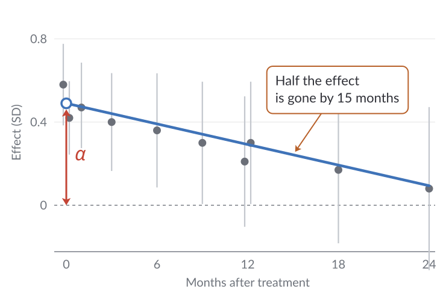
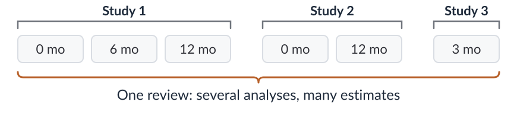
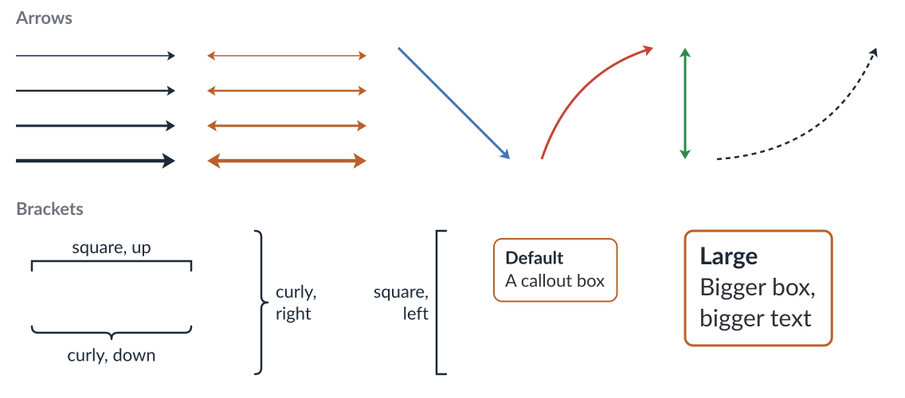

svgkit demo
Figures from tools/svgkit.py, callouts, signposts and a results list
Duncan Webb
Results preview
Effects fade
About half of an initial effect is gone after two years
Larger effects fade faster
Each extra standard deviation (SD) of initial effect adds a quarter SD of decline a year
Rankings rarely flip
Figures
A fitted line, step by step

The line summarises
all ten
estimates
Intercept
the effect when treatment ends
Nesting
Estimates within studies within a review

Every mark, at scale 1
A standalone signpost: not in the section nav
Arrows, brackets and callouts

Thank you!
you@university.edu